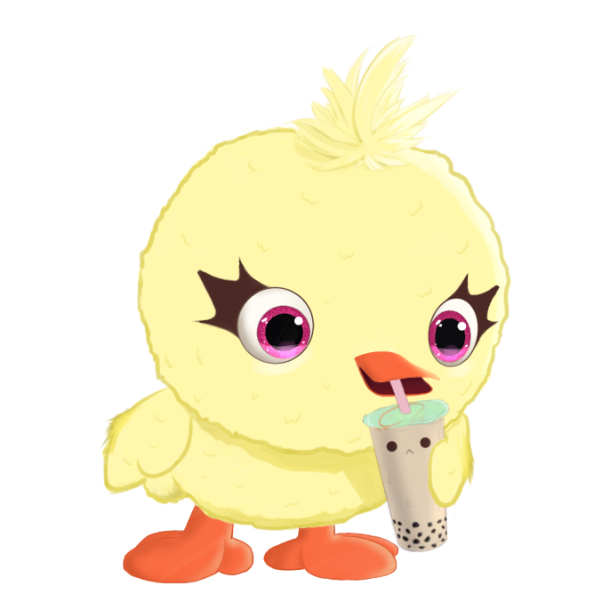
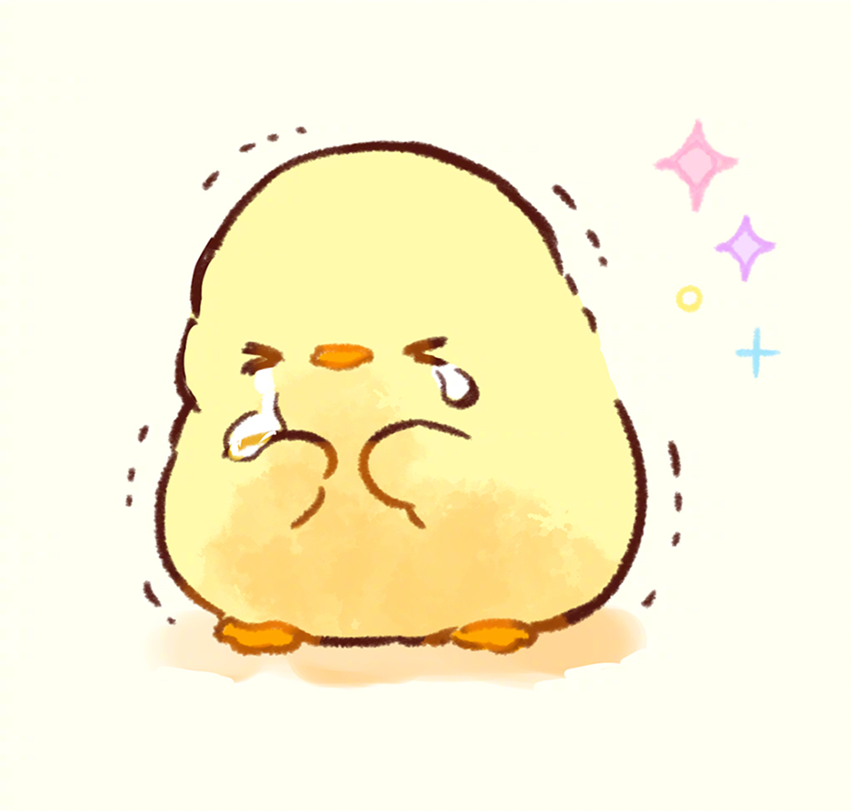

About Me!
Hello everyone! My name is Alyssa Vo and I'm currently a freshman at UW!
I have no idea what I'm doing but most of the time things turn out alright.
(Look! That's me in the corner!)
Classes I'm currently taking
- HSTAA 244: Imperialism and Anti-Colonialism in Asia
- INFO 200: Intellectual Foundations of Informatics
- CSE 154: Web Programming
Five of My Favorite Things
- Favorite animals:
- Penguins
- Dogs
- Polar Bears
- Favorite foods:
- Grilled Cheese and Tomato Soup
- Those Strawberry Shortcake Popsicle thingys
- Ice Cream
- Favorite TV shows:
- Mr. Robot
- Bojack Horseman
- Nathan For You
- Favorite hobbies:
- Filmmaking
- Knitting
- Video Games
- Favorite Artists:
- Frank Ocean
- The Beatles
- Tyler, The Creator
A picture that represents when I'm happy
This is a drawing of the Toy Story 4 character, Ducky, drinking bubble tea. This drawing was done by artist Kevin Wu and was found on his instagram page.
A picture that represents when I'm sad
This drawing of a chick crying was drawn by artist sanpoimo and was found reuploaded on this page.
One of my favorite quotes
- Kanye WestI hate when I'm on a flight and I wake up with a water bottle next to me like oh great now I gotta be responsible for this water bottle